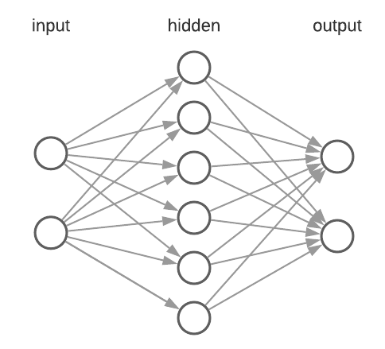

神经网络控制器 (Neural Network Controller)
引言
神经网络控制器是一类基于人工神经网络（Artificial Neural Network, ANN）的控制方法，能够通过学习从数据中提取复杂的非线性映射关系。与传统的PID或MPC控制器不同，神经网络控制器不需要精确的系统数学模型，可以直接从输入输出数据中学习控制策略。这使得神经网络控制器特别适用于难以建立精确模型的复杂非线性系统。
神经网络（Neural Networks）控制器的结构如下：

包含输入层、隐藏层及输出层。可配合遗传算法 (GA) 及强化学习 (RL) 训练、调节参数。
神经网络基础
感知器 (Perceptron)
感知器是神经网络中最基本的计算单元，也称为神经元（Neuron）。一个感知器接收多个输入信号，对每个输入乘以对应的权重（Weight），将加权和通过激活函数（Activation Function）产生输出：
其中 为输入， 为权重， 为偏置（Bias）， 为激活函数。
激活函数 (Activation Functions)
激活函数为神经网络引入非线性，使其能够近似任意复杂的函数。常用的激活函数包括：
- Sigmoid：，输出范围(0,1)，常用于二分类输出层。
- Tanh：，输出范围(-1,1)，在控制器输出需要正负值时较为适用。
- ReLU（Rectified Linear Unit）：，计算简单，是深度网络中最常用的激活函数。
- Leaky ReLU：，解决了ReLU的"死神经元"问题。
反向传播 (Backpropagation)
反向传播算法是训练神经网络的核心方法。其基本思想是：
- 前向传播（Forward Pass）：将输入数据通过网络逐层计算，得到输出预测值。
- 计算损失（Loss Computation）：将预测值与目标值进行比较，计算损失函数值（如均方误差MSE）。
- 反向传播梯度（Backward Pass）：利用链式法则（Chain Rule）从输出层到输入层逐层计算损失对每个权重的梯度。
- 更新权重（Weight Update）：使用梯度下降法（Gradient Descent）或其变体（如Adam优化器）更新权重和偏置。
其中 为学习率（Learning Rate）， 为损失函数。
用于控制的网络架构
前馈神经网络 (Feedforward Neural Network)
前馈神经网络（也称多层感知器，Multi-Layer Perceptron, MLP）是最基本的网络结构。数据从输入层经过一个或多个隐藏层流向输出层，不存在反馈连接。在控制应用中，前馈网络常用于：
- 逆动力学建模：学习从期望运动到所需控制力/力矩的映射。
- 静态非线性补偿：补偿摩擦、死区等非线性特性。
- 函数逼近：作为传统控制器中非线性部分的通用逼近器。
根据通用逼近定理（Universal Approximation Theorem），一个具有足够多隐藏神经元的单隐藏层前馈网络，可以以任意精度逼近任意连续函数。
循环神经网络 (Recurrent Neural Network, RNN)
循环神经网络具有时间反馈连接，能够处理序列数据并保持内部状态记忆。在控制应用中，RNN适用于：
- 动态系统辨识：学习具有时间依赖关系的系统动力学模型。
- 时间序列预测：预测系统未来状态，用于预测控制。
- 自适应控制：通过持续学习适应系统参数的变化。
RNN的常见变体包括：
- LSTM（长短期记忆网络）：通过门控机制解决长期依赖问题，适合需要长时间记忆的控制任务。
- GRU（门控循环单元）：LSTM的简化版本，计算效率更高。
训练方法
监督学习 (Supervised Learning)
在监督学习中，神经网络从标注的输入-输出对中学习。在控制领域，这通常意味着从已有的控制器（如专家操作数据或传统控制器的输出）中学习控制策略。
应用场景：
- 模仿学习（Imitation Learning）：从人类示教数据中学习机器人操作技能。
- 系统辨识（System Identification）：从输入输出数据中学习系统的动态模型。
- 控制器替代（Controller Cloning）：用神经网络替代计算量大的传统控制器（如MPC），在保持近似性能的同时大幅降低在线计算量。
强化学习 (Reinforcement Learning, RL)
强化学习是训练神经网络控制器最具潜力的方法。在RL框架中，智能体（Agent）通过与环境交互，根据奖励信号学习最优控制策略，不需要预先标注的训练数据。
常用的RL算法包括：
- PPO（Proximal Policy Optimization）：稳定性好，广泛用于机器人运动控制。
- SAC（Soft Actor-Critic）：基于最大熵框架，探索能力强，适合连续动作空间。
- TD3（Twin Delayed DDPG）：改进的确定性策略梯度方法，适合机器人控制任务。
RL训练通常在仿真环境（如MuJoCo、Isaac Gym、PyBullet）中进行，训练完成后将策略网络迁移到真实机器人上（Sim-to-Real Transfer）。
物理信息神经网络（PINN）
物理信息神经网络（Physics-Informed Neural Networks, PINN）由Raissi等人于2019年提出，其核心思想是在神经网络的损失函数中嵌入物理方程约束，使网络的预测结果自动满足已知的物理定律。
损失函数设计
PINN的总损失函数由数据拟合损失和物理残差损失两部分组成：
其中 为权衡系数，控制物理约束的强度。对于机器人动力学学习任务：
- 数据损失 ：使网络输出与测量数据吻合。
- 物理损失 ：惩罚网络预测违反牛顿第二定律 的程度。
其中 为关节角度， 为关节力矩， 为重力项， 为科里奥利矩阵。
PyTorch实现示例
import torch
import torch.nn as nn
class PINN(nn.Module):
"""物理信息神经网络：学习机器人关节动力学"""
def __init__(self, state_dim=4, hidden=128):
super().__init__()
self.net = nn.Sequential(
nn.Linear(state_dim, hidden), nn.Tanh(),
nn.Linear(hidden, hidden), nn.Tanh(),
nn.Linear(hidden, 1) # 输出：预测加速度
)
def forward(self, x):
return self.net(x)
def physics_residual(model, q, dq, tau, mass=1.0):
"""
计算物理残差：F = ma => tau = m * ddq
使用 torch.autograd.grad 计算输出对输入的梯度
"""
q = q.requires_grad_(True)
dq = dq.requires_grad_(True)
# 网络预测加速度
state = torch.cat([q, dq], dim=-1)
ddq_pred = model(state)
# 物理约束残差：tau - m*ddq = 0
residual = tau - mass * ddq_pred
return residual
def pinn_loss(model, q, dq, tau, ddq_measured, lam=1.0):
state = torch.cat([q, dq], dim=-1)
ddq_pred = model(state)
# 数据损失：与测量加速度比较
loss_data = nn.functional.mse_loss(ddq_pred, ddq_measured)
# 物理损失：动力学方程残差
residual = physics_residual(model, q, dq, tau)
loss_phys = (residual ** 2).mean()
return loss_data + lam * loss_phys
与纯数据驱动方法相比，PINN在训练数据稀少时仍能保持良好的外推性能，因为物理约束限制了网络的假设空间，防止过拟合。
神经微分方程（Neural ODE）
神经微分方程（Neural Ordinary Differential Equation, Neural ODE）由Chen等人于2018年提出，将神经网络与常微分方程求解器（ODE Solver）结合，形成连续深度模型。
基本原理
传统残差网络（ResNet）的前向传播可以写成：
Neural ODE将离散的层堆叠推广为连续的微分方程：
网络输出通过ODE求解器（如Runge-Kutta方法）在时间上积分得到：
轨迹预测应用
Neural ODE天然适合建模机器人轨迹（位置随时间的连续演化）。以下使用 torchdiffeq 库实现潜在ODE（Latent ODE）进行轨迹预测：
import torch
import torch.nn as nn
from torchdiffeq import odeint # pip install torchdiffeq
class ODEFunc(nn.Module):
"""定义潜在空间中的动力学 dx/dt = f(x, t)"""
def __init__(self, latent_dim=16):
super().__init__()
self.net = nn.Sequential(
nn.Linear(latent_dim, 64), nn.Tanh(),
nn.Linear(64, 64), nn.Tanh(),
nn.Linear(64, latent_dim)
)
def forward(self, t, x):
# t 是标量时间，x 是 [batch, latent_dim]
return self.net(x)
class LatentODE(nn.Module):
"""潜在ODE：编码器将轨迹压缩到潜在空间，ODE在其中演化"""
def __init__(self, obs_dim=2, latent_dim=16):
super().__init__()
self.encoder = nn.Linear(obs_dim, latent_dim)
self.ode_func = ODEFunc(latent_dim)
self.decoder = nn.Linear(latent_dim, obs_dim)
def forward(self, x0, t_span):
"""
x0: 初始观测值 [batch, obs_dim]
t_span: 时间点序列 [T]
返回: 预测轨迹 [T, batch, obs_dim]
"""
z0 = self.encoder(x0) # 编码到潜在空间
zt = odeint(self.ode_func, z0, t_span) # ODE积分
return self.decoder(zt) # 解码回观测空间
# 使用示例：预测机器人末端执行器的2D轨迹
model = LatentODE(obs_dim=2, latent_dim=16)
t_span = torch.linspace(0, 2.0, 50) # 预测2秒，共50个时间点
x0 = torch.tensor([[0.5, 0.3]]) # 初始位置
traj = model(x0, t_span) # 预测轨迹 [50, 1, 2]
Neural ODE的主要优势在于：参数数量与积分步数无关（深度自适应），且天然支持不规则采样时间序列。
Koopman算子与线性化
Koopman算子理论（Koopman Operator Theory）提供了将非线性系统转化为等价线性系统的数学框架，为将深度学习与经典线性控制理论（如LQR）结合提供了途径。
基本思想
对于非线性离散动力系统 ，Koopman算子 作用于可观测函数（Observable Function） 上：
选取合适的可观测函数集 ，可以将非线性系统在提升空间（Lifted Space）中表示为线性系统：
其中 是有限维的线性矩阵，可通过最小二乘拟合。
深度Koopman网络
深度Koopman（Deep Koopman）使用神经网络学习非线性编码器 ，将状态提升到更易于线性化的高维特征空间：
class DeepKoopman(nn.Module):
"""
深度Koopman网络
encoder: 非线性提升 x -> z（升维）
K: 线性动力学矩阵（可训练）
decoder: 投影回原始状态空间 z -> x
"""
def __init__(self, state_dim=4, lift_dim=32):
super().__init__()
self.encoder = nn.Sequential(
nn.Linear(state_dim, 64), nn.ELU(),
nn.Linear(64, lift_dim)
)
# 线性Koopman矩阵 K（核心线性假设）
self.K = nn.Linear(lift_dim, lift_dim, bias=False)
self.decoder = nn.Sequential(
nn.Linear(lift_dim, 64), nn.ELU(),
nn.Linear(64, state_dim)
)
def forward(self, x):
z = self.encoder(x) # 提升
z_next = self.K(z) # 线性演化
x_next = self.decoder(z_next) # 投影回原空间
return x_next, z, z_next
def koopman_loss(model, x, x_next):
"""Koopman损失 = 预测损失 + 线性一致性损失"""
x_pred, z, z_next = model(x)
_, z_true, _ = model(x_next)
loss_pred = nn.functional.mse_loss(x_pred, x_next) # 一步预测
loss_linear = nn.functional.mse_loss(z_next, z_true) # 线性性约束
return loss_pred + 0.5 * loss_linear
与LQR结合
Koopman线性化后，可以在提升空间中直接应用线性二次型调节器（Linear Quadratic Regulator, LQR）。LQR在提升空间 中设计最优线性反馈增益 ，再将控制律映射回原始状态空间，从而实现对非线性系统的近最优控制。
模仿学习控制（Imitation Learning）
模仿学习（Imitation Learning）从专家演示数据中学习控制策略，无需手动设计奖励函数。
行为克隆（Behavioral Cloning, BC）
行为克隆（Behavioral Cloning, BC）将模仿学习转化为监督学习问题：直接将专家的（状态，动作）对作为训练数据，训练策略网络 。
BC的主要缺陷是协变量偏移（Covariate Shift）：训练数据与测试时智能体实际访问的状态分布不同——智能体在部署时遇到的轻微偏差会被策略放大，最终导致越来越大的错误积累。
DAgger算法
数据集聚合（Dataset Aggregation, DAgger）算法（Ross et al., 2011）是BC的改进版，通过迭代地让策略与专家交互来解决协变量偏移问题：
DAgger 算法:
1. 用专家数据训练初始策略 π_1（等同于BC）
2. 对于每次迭代 i = 1, 2, ..., N:
a. 用当前策略 π_i 在环境中运行，收集访问的状态 s_1, s_2, ...
b. 请专家对这些状态标注最优动作: a* = π_expert(s)
c. 将新的 (s, a*) 对加入数据集: D = D ∪ {(s, a*)}
d. 在聚合数据集 D 上重新训练策略 π_{i+1}
DAgger的收敛性有理论保证：模型误差不随时间累积。主要局限是需要专家在线参与（或交互式仿真器），在真实机器人演示中成本较高。
PyTorch行为克隆训练示例
import torch
import torch.nn as nn
from torch.utils.data import TensorDataset, DataLoader
class BCPolicy(nn.Module):
"""行为克隆策略网络（MLP）"""
def __init__(self, obs_dim, act_dim, hidden=256):
super().__init__()
self.net = nn.Sequential(
nn.Linear(obs_dim, hidden), nn.ReLU(),
nn.Linear(hidden, hidden), nn.ReLU(),
nn.Linear(hidden, act_dim)
)
def forward(self, obs):
return self.net(obs)
def train_bc(obs_data, act_data, obs_dim, act_dim,
epochs=100, batch_size=256, lr=3e-4):
"""
obs_data: [N, obs_dim] 专家观测
act_data: [N, act_dim] 专家动作
"""
dataset = TensorDataset(obs_data, act_data)
loader = DataLoader(dataset, batch_size=batch_size, shuffle=True)
policy = BCPolicy(obs_dim, act_dim)
optimizer = torch.optim.AdamW(policy.parameters(), lr=lr,
weight_decay=1e-4)
scheduler = torch.optim.lr_scheduler.CosineAnnealingLR(
optimizer, T_max=epochs)
loss_fn = nn.MSELoss()
for epoch in range(epochs):
total_loss = 0.0
for obs_batch, act_batch in loader:
pred = policy(obs_batch)
loss = loss_fn(pred, act_batch)
optimizer.zero_grad()
loss.backward()
# 梯度裁剪：防止梯度爆炸
torch.nn.utils.clip_grad_norm_(policy.parameters(), 1.0)
optimizer.step()
total_loss += loss.item()
scheduler.step()
if (epoch + 1) % 10 == 0:
avg = total_loss / len(loader)
print(f"Epoch {epoch+1}/{epochs} Loss: {avg:.4f} "
f"LR: {scheduler.get_last_lr()[0]:.2e}")
return policy
扩散策略（Diffusion Policy）
扩散策略（Diffusion Policy）由Chi等人于2023年提出，将去噪扩散概率模型（Denoising Diffusion Probabilistic Model, DDPM）用于机器人操控策略学习，在处理多模态动作分布方面展现出超越传统行为克隆的显著优势。
核心思想
传统行为克隆（BC）使用均方误差损失，本质上拟合动作的条件均值，当专家示例存在多种等价解法（多模态）时，均值会落在不可行区域（平均多个模态）。
扩散策略将策略学习建模为去噪过程：
- 前向过程（加噪）：对真实专家动作 逐步加高斯噪声，得到纯噪声 。
- 反向过程（去噪）：训练网络 预测每一步的噪声，以观测 为条件，从纯噪声迭代恢复出动作 。
策略在推理时从高斯噪声出发，经过 步去噪生成动作序列。由于每次采样路径不同，可以自然表达多模态分布（每种抓取姿态对应一个模态）。
相对于BC的优势
| 特性 | 行为克隆 (BC) | 扩散策略 |
|---|---|---|
| 多模态动作分布 | 无法表达（均值塌缩） | 天然支持 |
| 动作精度 | 中等 | 高（迭代精化） |
| 推理速度 | 极快（单次前向） | 较慢（多步去噪） |
| 训练复杂度 | 简单（MSE损失） | 中等（DDPM损失） |
| 对超参数敏感性 | 中等 | 较低 |
扩散策略在Columbia的机器人操控实验中，相比BC和LSTM-GMM（高斯混合模型）将任务成功率提升了显著幅度，尤其在需要精确把握物体或处理多解情况时优势明显。
安全学习控制（Safe Learning）
在实际机器人部署中，确保学习控制器满足安全约束（如避免碰撞、关节限位）至关重要。控制障碍函数（Control Barrier Function, CBF）提供了一种严格的安全保证框架，可与神经网络控制器结合使用。
控制障碍函数（CBF）
给定安全集合 ，CBF 要求系统轨迹在 内保持前向不变性（Forward Invariance）：
其中 是一个K类函数（class-K function，严格递增且 ），常取 （线性）。
直觉理解：当系统接近安全边界（）时，约束要求 越来越小（允许趋向边界的速率递减），从而阻止系统穿越边界。
CLF-CBF 二次规划
将控制李雅普诺夫函数（Control Lyapunov Function, CLF）用于稳定性、CBF用于安全性，两者通过二次规划（Quadratic Program, QP）统一求解：
其中 是神经网络策略的输出，QP在满足安全约束的前提下对其进行最小修正。
import torch
import cvxpy as cp
import numpy as np
def cbf_qp_filter(u_ref, x, h_func, dh_dx, f_func, gamma=1.0):
"""
CBF安全过滤器：对神经网络控制输出 u_ref 进行安全修正
h_func: CBF函数 h(x)，安全集合 h(x) >= 0
dh_dx: h 对 x 的梯度（行向量）
f_func: 系统动力学 f(x, u)，需满足 dh/dt >= -gamma*h
"""
u_dim = len(u_ref)
u = cp.Variable(u_dim)
# CBF约束：Lf_h + Lg_h * u >= -gamma * h(x)
h_val = float(h_func(x))
Lf_h = float(dh_dx @ f_func(x, np.zeros(u_dim)))
Lg_h = dh_dx @ np.eye(u_dim) # 简化：直接输入影响
constraints = [Lg_h @ u >= -gamma * h_val - Lf_h]
# 目标：最小化对参考控制的修正
objective = cp.Minimize(cp.sum_squares(u - u_ref))
prob = cp.Problem(objective, constraints)
prob.solve(solver=cp.OSQP, warm_start=True)
if prob.status == cp.OPTIMAL:
return u.value
else:
return u_ref # 求解失败时回退到原始控制
端到端学习控制
端到端（End-to-End）学习控制指直接从原始感知输入（如摄像头图像、雷达点云）输出控制命令，中间不依赖手工设计的感知、规划等模块。
视觉运动策略（Visuomotor Policy）
Levine等人2016年提出的端到端视觉运动策略（Visuomotor Policy）将卷积神经网络（CNN）与运动规划网络连接，直接从RGB图像预测机器人关节力矩：
现代端到端控制通常采用以下架构：
- 视觉编码器：预训练的视觉Transformer（ViT）或ResNet提取图像特征。
- 状态融合：将图像特征与机器人本体状态（关节角度、速度）拼接。
- 策略头：MLP或Transformer输出动作序列。
仿真到真实迁移（Sim-to-Real Transfer）
由于在真实机器人上收集大规模训练数据成本极高，端到端控制器通常在仿真中训练，然后迁移到真实机器人。
域随机化（Domain Randomization） 是最常用的仿真到真实迁移技术：在训练时随机扰动仿真参数（物体颜色、纹理、光照、摩擦系数、传感器噪声等），迫使策略网络学习对这些变化鲁棒的特征：
| 随机化类别 | 随机化参数示例 |
|---|---|
| 视觉外观 | 纹理、颜色、光照方向、相机位置噪声 |
| 物理参数 | 质量、摩擦系数、关节阻尼、弹性系数 |
| 传感器噪声 | 图像噪声、关节编码器噪声、延迟 |
| 任务参数 | 物体初始位置、目标位置的随机扰动 |
局限性
端到端学习控制目前的主要挑战：
- 可解释性差：网络内部决策过程不透明，难以诊断故障原因。
- 分布外泛化（Out-of-Distribution Generalization）：对训练分布外的场景（新纹理、新光照）可能完全失败。
- 数据效率：收敛通常需要数百万次仿真交互，样本效率远低于基于模型的方法。
- 安全性保证缺失：端到端网络很难提供碰撞避免等硬约束的形式化保证。
机器人应用
神经网络控制器在机器人领域的主要应用包括：
- 四足/人形机器人运动控制：使用RL训练策略网络，实现在复杂地形上的稳定行走、奔跑和跳跃。
- 机械臂操控：学习抓取、放置和装配等精细操作任务。
- 自动驾驶：端到端（End-to-End）的驾驶控制，从摄像头图像直接输出方向盘角度和加速踏板。
- 无人机控制：学习高机动飞行和特技动作的控制策略。
- 柔性机器人控制：难以精确建模的柔性机构的控制。
优势与局限
相对于传统控制器的优势
- 无需精确模型：可以在模型未知或难以建立的情况下工作。
- 处理非线性：天然适合处理高度非线性的系统。
- 自适应能力：可以通过在线学习适应系统参数的变化和外部干扰。
- 处理高维输入：可以直接处理图像、点云等高维感知数据。
局限性
- 缺乏可解释性（Interpretability）：神经网络是"黑箱"模型，难以分析和验证其行为的安全性。
- 稳定性保证：与经典控制理论（如Lyapunov稳定性）不同，神经网络控制器通常缺乏严格的稳定性证明。
- 数据依赖：训练需要大量的数据或仿真交互，数据质量直接影响控制性能。
- 泛化能力：在训练分布之外的场景中，行为可能不可预测。
- 实时计算需求：复杂的网络结构可能无法满足高频控制的计算时间约束。
训练实践
数据收集与课程学习
高质量的训练数据是神经网络控制器性能的基础。数据收集策略：
- 课程学习（Curriculum Learning）：从简单任务开始训练，逐步增加难度。例如，先训练机器人在平地行走，再引入斜坡、台阶等障碍。
- 多样化场景覆盖：收集覆盖尽可能多的状态空间的数据，避免策略在边界状态上失效。
- 数据增强：对观测数据进行随机裁剪、颜色抖动、噪声添加等增强，提升泛化能力。
完整MLP策略训练流程
import torch
import torch.nn as nn
from torch.utils.data import DataLoader, TensorDataset
class MLPPolicy(nn.Module):
"""带LayerNorm的MLP策略网络，适合机器人控制任务"""
def __init__(self, obs_dim, act_dim, hidden_dim=256, n_layers=3):
super().__init__()
layers = []
in_dim = obs_dim
for _ in range(n_layers):
layers += [
nn.Linear(in_dim, hidden_dim),
nn.LayerNorm(hidden_dim),
nn.ReLU()
]
in_dim = hidden_dim
layers.append(nn.Linear(hidden_dim, act_dim))
layers.append(nn.Tanh()) # 动作归一化到 [-1, 1]
self.net = nn.Sequential(*layers)
def forward(self, obs):
return self.net(obs)
def train_policy(obs_data, act_data, obs_dim, act_dim,
epochs=200, batch_size=512,
lr=3e-4, weight_decay=1e-4):
"""
完整训练流程：AdamW优化器 + 余弦退火学习率 + 梯度裁剪
"""
device = torch.device("cuda" if torch.cuda.is_available() else "cpu")
policy = MLPPolicy(obs_dim, act_dim).to(device)
dataset = TensorDataset(obs_data.to(device), act_data.to(device))
loader = DataLoader(dataset, batch_size=batch_size,
shuffle=True, pin_memory=False)
# AdamW：带权重衰减的Adam，比L2正则化更稳定
optimizer = torch.optim.AdamW(policy.parameters(),
lr=lr, weight_decay=weight_decay)
# 余弦退火：学习率从 lr 平滑衰减到 0，避免震荡
scheduler = torch.optim.lr_scheduler.CosineAnnealingLR(
optimizer, T_max=epochs, eta_min=1e-6)
loss_fn = nn.MSELoss()
best_loss = float('inf')
for epoch in range(epochs):
policy.train()
epoch_loss = 0.0
for obs_batch, act_batch in loader:
pred = policy(obs_batch)
loss = loss_fn(pred, act_batch)
optimizer.zero_grad()
loss.backward()
# 梯度裁剪：防止梯度爆炸，max_norm=1.0 是常用设置
torch.nn.utils.clip_grad_norm_(policy.parameters(),
max_norm=1.0)
optimizer.step()
epoch_loss += loss.item()
scheduler.step()
avg_loss = epoch_loss / len(loader)
if avg_loss < best_loss:
best_loss = avg_loss
torch.save(policy.state_dict(), "best_policy.pt")
if (epoch + 1) % 20 == 0:
print(f"Epoch {epoch+1:3d}/{epochs} "
f"Loss: {avg_loss:.5f} "
f"LR: {scheduler.get_last_lr()[0]:.2e}")
print(f"训练完成，最优损失: {best_loss:.5f}")
return policy
def evaluate_policy(policy, env, n_episodes=20):
"""在仿真环境中评估策略，返回平均回报"""
policy.eval()
total_reward = 0.0
with torch.no_grad():
for _ in range(n_episodes):
obs, done = env.reset(), False
ep_reward = 0.0
while not done:
obs_t = torch.FloatTensor(obs).unsqueeze(0)
action = policy(obs_t).squeeze(0).numpy()
obs, reward, done, _ = env.step(action)
ep_reward += reward
total_reward += ep_reward
return total_reward / n_episodes
仿真到真实迁移技术汇总
| 技术 | 描述 | 适用场景 |
|---|---|---|
| 域随机化 | 随机化仿真中的物理和视觉参数 | 视觉策略、操控任务 |
| 系统辨识 | 精确测量并匹配真实系统参数 | 精密控制任务 |
| 适应层 | 部署时用少量真实数据微调网络末层 | 快速适应新环境 |
| 域自适应 | 对齐仿真和真实数据的特征分布 | 视觉传感器差异 |
| 课程学习 | 渐进增加仿真难度 | 复杂运动技能 |
| 残差学习 | 在传统控制器上叠加神经网络残差 | 有先验模型的系统 |
应用实例
以下是一个使用PyTorch实现简单神经网络控制器的概念示例，用于倒立摆（Inverted Pendulum）的平衡控制：
import torch
import torch.nn as nn
class NNController(nn.Module):
"""简单的前馈神经网络控制器"""
def __init__(self, state_dim, action_dim, hidden_dim=64):
super(NNController, self).__init__()
self.network = nn.Sequential(
nn.Linear(state_dim, hidden_dim),
nn.ReLU(),
nn.Linear(hidden_dim, hidden_dim),
nn.ReLU(),
nn.Linear(hidden_dim, action_dim),
nn.Tanh() # 输出范围 [-1, 1]
)
def forward(self, state):
return self.network(state)
# 创建控制器：4维状态输入，1维动作输出
controller = NNController(state_dim=4, action_dim=1)
# 输入状态 [位置, 速度, 角度, 角速度]
state = torch.tensor([0.1, 0.0, 0.05, -0.02])
# 获取控制输出
action = controller(state)
参考资料
- K. J. Hunt, D. Sbarbaro, R. Zbikowski, and P. J. Gawthrop, "Neural Networks for Control Systems - A Survey," Automatica, vol. 28, no. 6, pp. 1083-1112, 1992.
- S. Levine, C. Finn, T. Darrell, and P. Abbeel, "End-to-End Training of Deep Visuomotor Policies," Journal of Machine Learning Research, vol. 17, no. 39, pp. 1-40, 2016.
- T. Hwangbo et al., "Learning Agile and Dynamic Motor Skills for Legged Robots," Science Robotics, vol. 4, no. 26, 2019.
- 刘金琨, 《智能控制》, 电子工业出版社.
- M. Raissi, P. Perdikaris, and G. E. Karniadakis, "Physics-Informed Neural Networks: A Deep Learning Framework for Solving Forward and Inverse Problems Involving Nonlinear Partial Differential Equations," Journal of Computational Physics, vol. 378, pp. 686-707, 2019.
- R. T. Q. Chen, Y. Rubanova, J. Bettencourt, and D. Duvenaud, "Neural Ordinary Differential Equations," NeurIPS, 2018.
- C. Chi, S. Feng, Y. Du, et al., "Diffusion Policy: Visuomotor Policy Learning via Action Diffusion," RSS, 2023.
- S. Ross, G. Gordon, and D. Bagnell, "A Reduction of Imitation Learning and Structured Prediction to No-Regret Online Learning," AISTATS, 2011.
- A. D. Ames, X. Xu, J. W. Grizzle, and P. Tabuada, "Control Barrier Function Based Quadratic Programs for Safety Critical Systems," IEEE Transactions on Automatic Control, vol. 62, no. 8, pp. 3861-3876, 2017.
- M. Brunton and J. N. Kutz, "Data-Driven Science and Engineering: Machine Learning, Dynamical Systems, and Control," Cambridge University Press, 2019.